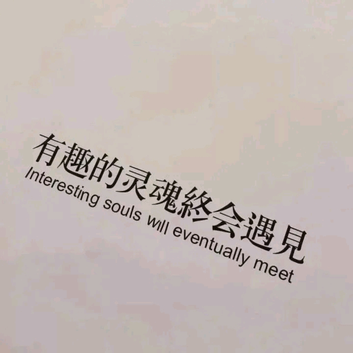

一个庸俗之人，
【If possible，】
你远道而来这世间，想必，也是因为热爱吧。
喜欢歌`动漫`电影```做爱做的事。
“间歇性踌躇满志，持续性混吃等死”
既然全世界都是欢声笑语，为了多样化，我决定独自悲伤。
在不完美之中寻找美好 接受人生的生死轮回和残缺之美
大抵不应以满怀的希望迎接但凡一丝可能绝望的事情，以为这样，大多最后会有点低落吧。倘若反其道而行之，用绝望待以些许可能希望的事，便之后满心欢喜的几率也会较大吧。
随便一个森林，死在哪里便烂在哪里，等不来爱人朋友，连秃鹫也嫌弃，两年后满树繁花，会不会有一朵连着我的心。高考还有：
天 时 分 秒
| 语文 | 112 | +0.5 | 数学 | 115 | +22 | 英语 | 122 | +7 |
|---|---|---|---|---|---|---|---|---|
| 物理 | 78 | +37 | 化学 | 53 | +19 | 生物 | 81 | +21 |
每次听你的声音，都感觉很治愈很温柔。虽然听了无数次了，但好像永远都听不够。世界上所有女人，除了我妈，我也就认真听你说话说得最多了。不管我无聊时候，难受时候，孤单时候，只要听听你的声音，好像就能好受许多了。我一直是个脑筋很怪的人，总是容易生气，容易悲伤。自从听到了你的声音，周围的一切都慢慢好了起来。虽然有些夸张，但我仿佛得到了拯救。有的时候，我会想到那些不好的事情。从前的我每每想到那些事，就会难受许久，但遇到你之后，好像心里有什么东西悄然地变了，如一片破败的荒草里开出了花来，也不再会一直难过了。我明白其实你也只是个普通的女孩子，你也会有难受，孤单，生气的时候，可你总是把最温柔的一面送给别人，自己默默承受那些消极的情绪。只是互联网这神奇的玩意，让你的温柔，成了我的寄托。还有两天就是四月了，希望你能过得快乐，身体健康，希望你也能获得别人送来的温暖和柔情，最好再结交三两个交心的朋友。谢谢你，祝福你。这么多字，打肉麻的文字也不止这一次了，真情实意也好，彩虹屁也罢，但我真的是很用心复制来的。